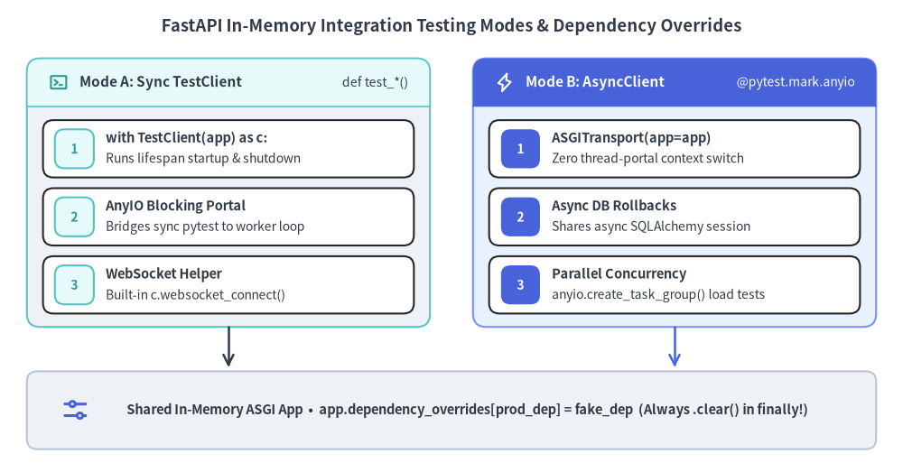
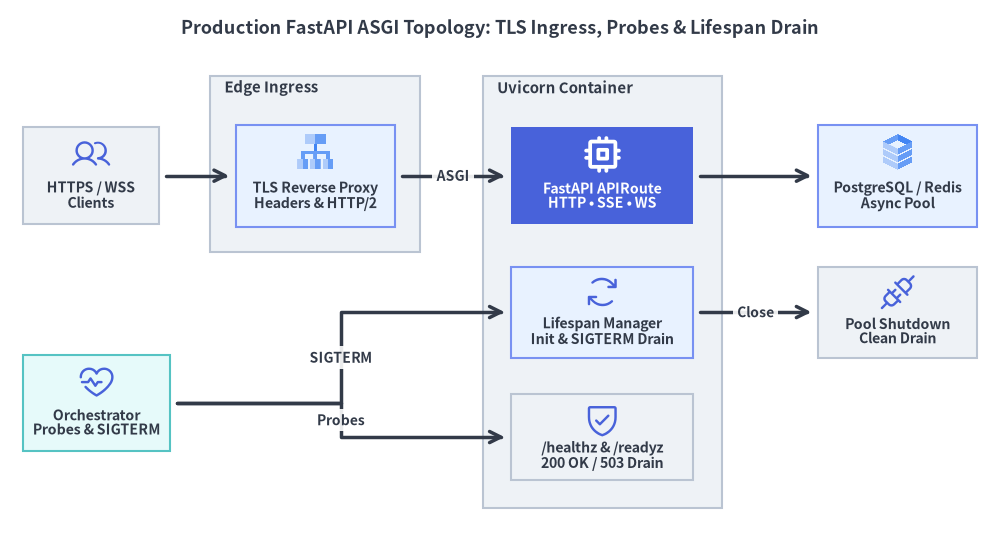

Testing Patterns & Production ASGI
FastAPI v0.162.2 enables sub-millisecond in-memory integration testing—either synchronously via with TestClient(app) as client: or natively on an async event loop via httpx.ASGITransport—and pairs cleanly with reverse-proxied ASGI workers, health probes, and graceful lifespan draining in production.

1. Synchronous TestClient vs Native Async ASGITransport
Both testing harnesses speak ASGI directly in memory without opening a TCP socket, yet they target complementary testing scenarios (building on the Enterprise DI & Lifespan architecture):
| Criterion | with TestClient(app) as client: |
httpx.AsyncClient(transport=ASGITransport(app=app)) |
|---|---|---|
| Test Function Style | Standard synchronous def test_...() |
Coroutine @pytest.mark.anyio async def test_...() |
| Lifespan Execution | Enters lifespan on with block entry & exits on with exit |
State managed explicitly or paired with an async lifespan fixture |
| Realtime Protocols | HTTP, SSE, JSONL, and client.websocket_connect(...) |
HTTP, SSE (ac.stream(...)), and JSONL on the active loop |
| Async DB Transactions | Separate portal loop complicates shared async DB fixtures | Runs on the exact same event loop as async DB rollback fixtures |
Lifespan Context & Safe dependency_overrides Cleanup
Two subtle mistakes cause flaky FastAPI test suites in large repositories:
- Omitting the
withStatement onTestClient: Instantiatingclient = TestClient(app)withoutwith TestClient(app) as client:skips your@asynccontextmanagerlifespanstartup and shutdown hooks completely! - Leaking
app.dependency_overridesAcross Tests: Becauseapp.dependency_overridesmutates a dictionary on theFastAPIinstance, always clear overrides inside atry ... finally: app.dependency_overrides.clear()block (or ayieldpytest fixture) so test doubles never bleed into subsequent tests.
from collections.abc import AsyncGenerator
from contextlib import asynccontextmanager
from typing import Annotated
from fastapi import Depends, FastAPI, Request, Response, status
from fastapi.testclient import TestClient
def create_production_app() -> FastAPI:
@asynccontextmanager
async def lifespan(app: FastAPI) -> AsyncGenerator[None, None]:
app.state.db_ready = True
app.state.events = ["startup:complete"]
try:
yield
finally:
app.state.db_ready = False
app.state.events.append("shutdown:complete")
app = FastAPI(lifespan=lifespan)
def get_exchange_rate() -> float:
return 152.40
app.state.get_exchange_rate = get_exchange_rate
@app.get("/healthz")
async def liveness_probe() -> dict[str, str]:
return {"status": "alive"}
@app.get("/readyz")
async def readiness_probe(request: Request, response: Response) -> dict[str, str]:
if not getattr(request.app.state, "db_ready", False):
response.status_code = status.HTTP_503_SERVICE_UNAVAILABLE
return {"status": "draining"}
return {"status": "ready"}
@app.get("/quotes/usd-jpy")
async def quote_usd_jpy(
rate: Annotated[float, Depends(get_exchange_rate)],
) -> dict[str, float]:
return {"usd_jpy": rate}
return app
app = create_production_app()
app.dependency_overrides[app.state.get_exchange_rate] = lambda: 150.00
try:
with TestClient(app) as client:
assert client.get("/readyz").status_code == 200
assert client.get("/quotes/usd-jpy").json() == {"usd_jpy": 150.0}
finally:
app.dependency_overrides.clear()
assert app.state.events == ["startup:complete", "shutdown:complete"]
Native Async Testing with @pytest.mark.anyio & httpx.ASGITransport
When testing async database rollbacks, native OpenTelemetry spans, or concurrent request behavior, drive the app directly with httpx.ASGITransport:
import httpx
import pytest
@pytest.mark.anyio
async def test_async_readiness_transitions() -> None:
app = create_production_app()
app.state.db_ready = False # Simulate cold pool before readiness
transport = httpx.ASGITransport(app=app)
async with httpx.AsyncClient(
transport=transport, base_url="http://testserver"
) as ac:
assert (await ac.get("/healthz")).status_code == 200
assert (await ac.get("/readyz")).status_code == 503
app.state.db_ready = True
assert (await ac.get("/readyz")).status_code == 200
2. Production ASGI Topology, Health Probes & Graceful Shutdown
In Kubernetes, Cloud Run, or systemd deployments, place single-process Uvicorn ASGI workers behind a TLS-terminating reverse proxy or load balancer and let the container orchestrator manage horizontal replica scaling:

Production ASGI Operations Checklist
- Separate Liveness (
/healthz) from Readiness (/readyz):/healthz(Liveness) must be an instantaneous, dependency-free200 OKcheck confirming the event loop is not deadlocked. Never query external databases inside/healthz—a transient DB blip would cause Kubernetes to restart all healthy pods simultaneously!/readyz(Readiness) verifieslifespanwarmup state and critical pool readiness, returning503 Service Unavailableduring startup or graceful drain so load balancers stop routing new traffic without killing in-flight requests. Exclude probe paths from tracing (exclude=lambda s: s.get("path") in {"/healthz", "/readyz"}) to keep telemetry clean.
- Scale Replicas Horizontally (
1Process per Container): In container orchestrators (Kubernetes, Cloud Run, ECS), run a singleuvicornprocess per container with--timeout-graceful-shutdownaligned toterminationGracePeriodSecondssoSIGTERMcleanly unwinds in-flight SSE / WebSocket streams and exits yourlifespanfinallyblock. - Trust Proxy Headers Explicitly: Bind local sidecar workers to
127.0.0.1(or restrict--forwarded-allow-ipsto known load-balancer CIDRs) soX-Forwarded-ForandX-Forwarded-Protocannot be spoofed by untrusted clients:
uvicorn app.main:app \
--host 127.0.0.1 \
--port 8000 \
--proxy-headers \
--timeout-graceful-shutdown 30 \
--no-access-log
Return to the Overview & Architecture Map to review how all six chapters connect across the FastAPI v0.162.2 stack.